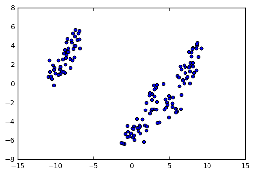
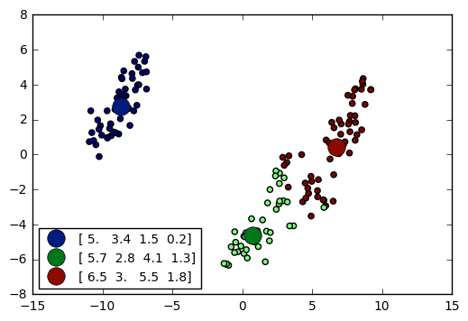
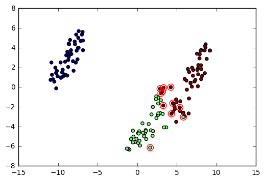
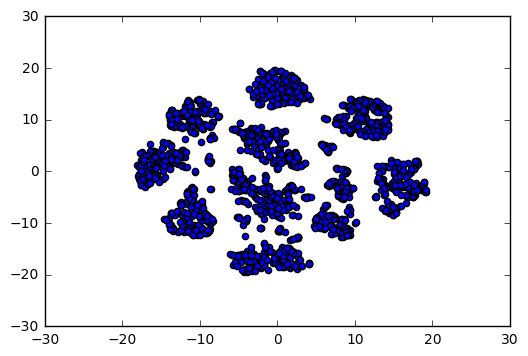
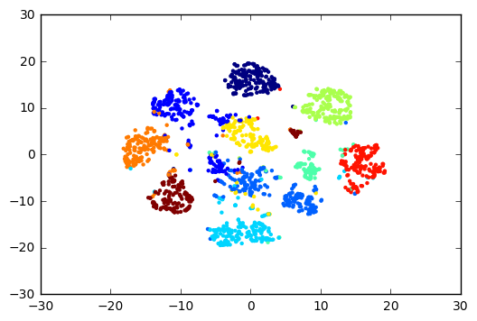
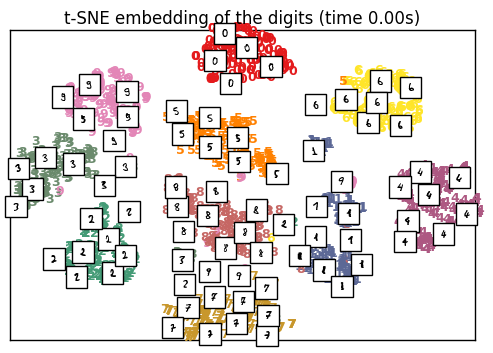

Обучение без учителя
Все перечисленные мною выше методы относят к разделу машинного обучению с учителем. При обучении с учителем вы имеете 1. Объекты с признаками и 2. какие-либо правильные ответы. Например: объекты- пациенты, признаки- баллы по МППЙ тесту, а правильные ответы- диагнозы. Вы загружаете в модель баллы по ММПЙ по каждому больноу и хотите, чтобы модель на них научилась предсказывать диагноз.
Обучение без учителя (Unsupervised learning) не предусматривает какого-либо правильного ответа. Машина сама должна определить, классы объектов. Делает она это на основании похожести объектов по их признакам. Например, алгоритм может автоматически разделить пациентов на несколько групп на основании баллов ММПЙ. Мы можем проанализировать эти группы и понять, имеет ли это разделение для нас какое-либо значение или нет.
На мой взгляд, лучшей иллюстрацией этого метода является работа по выявлению биотипов депрессии на основании данных МРТ.
Я проиллюстрирую работу алгоритмов обучения без учителя на двух примерах.
В первом примере мы используем набор данных по названием Iris dataset. 
Это классический набор данных. Он включает в себя набор из 150 экземпляров цветков ирисов. Данные представляют из себя 4 измерения лепестков:
- Длина наружной доли околоцветника (англ. sepal length);
- Ширина наружной доли околоцветника (англ. sepal width);
- Длина внутренней доли околоцветника (англ. petal length);
- Ширина внутренней доли околоцветника (англ. petal width).
Допустим, мы заметили, что цветки разных ирисов отличаются друг от друга. Мы предположили, что в нашей оранжерее есть 2 или 3 вида ирисов. Можно ли на основании измерений цветков классифицировать ирисы?
- Выдвинем гипотезу, что в настоящем наборе присутствет больше одного вида растений и проверим её.
- Если гипотеза верна и в наборе есть более одного вида растений, автоматически разметим эти классы.
Загрузим данные
iris = datasets.load_iris()
data = iris.data
Итак, мы имеем я описал выше. Ниже приведены первые 5 ирисов из набора.
data[:5]
array([[ 5.1, 3.5, 1.4, 0.2],
[ 4.9, 3. , 1.4, 0.2],
[ 4.7, 3.2, 1.3, 0.2],
[ 4.6, 3.1, 1.5, 0.2],
[ 5. , 3.6, 1.4, 0.2]])
То есть, для первого цветка: 1. Длина наружной доли околоцветника (англ. sepal length) = 5.1 2. Ширина наружной доли околоцветника (англ. sepal width) = 3.5 3. Длина внутренней доли околоцветника (англ. petal length) = 1.4 4. Ширина внутренней доли околоцветника (англ. petal width) = 0.2
и так далее.
Для проверки гипотезы о том, что в наборе несколько видов ирисов, я использую один из самых распространённых алгоритмов под названием TSNE (t-distributed Stochastic Neighbor Embedding).
tsne=TSNE(n_components=2, init='pca', random_state=0,learning_rate=150)
coord=tsne.fit_transform(data)
Мы загрузили данные в алгоритм и настроили его. Образно говоря, алгоритм производит уменьшение размерности наших данных с 4-х измерений до 2-х для того, чтобы эти данные можно было визуализировать на диаграмме.
Построим диаграмму:

Каждая точка представляет отдельный цветок. Чем измерения каждого цветка больше похожи друг на друга, тем ближе друг к другу их представления на диаграмме.
Визуально мы можем точно утверждать, что у нас есть 2 класса. Но, если присмотреться, то в болшая область также слабо делится на 2 части. То есть, возможно, что классов три. Гипотеза подтвердилась: в нашем наборе данных присутствует больше одного класса растений.
Давайте точно определим, сколько у нас классов: 2 или 3 и разметим все цетки.
Для этого применим алгоритм, под названием AffinityPropagation. Это тоже очень распространённый алгоритм, применяемый во многих сферах.
af = AffinityPropagation(preference=-50).fit(data)
cluster_centers_indices = af.cluster_centers_indices_
n_clusters_ = len(cluster_centers_indices)
labels = af.labels_
Мы загрузили данные в алгоритм и он автоматически выделил классы. Давайте мы возьмём предыдущий график и каждый полученный класс цветка обозначим отдельным цветом:

Мы видим, что классов у нас всё-таки три. Крупные точки - это цветки, характеристики которых являются наиболее типичными для определённого класса. Из диаграммы также видно, что один класс ирисов имеет более выраженные внешние различия с остальными классами.
Отлично! Наши гипотезы подтвердились!
На самом деле, набор данных ирисов уже разделён на классы. Давайте проверим, насколько наш алгоритм хорошо справился с задачей.
y=iris.target
pd.crosstab(labels, y)
| col_0 | 0 | 1 | 2 |
|---|---|---|---|
| row_0 | |||
| 0 | 50 | 0 | 0 |
| 1 | 0 | 41 | 2 |
| 2 | 0 | 9 | 48 |
Нулевой класс алгоритм поеределил на 100% правильно. В первом классе наш алгоритм ошибся на 9 цветков. Во втором классе - всего на два цветка. Точность алгоритма составила 92%.
Давайте обведём объкеты, которые алгоритм обибочно определил.

Как видите, наш алгоритм по большей части ошибся в тех случаях, когда данные находились на границе двух кластеров.
Теперь давайте посмотрим на цветки каждого вида

Видим, что Ирис щетинистый (Iris setosa) больше отличается от виргинского (iris virginica) и разноцветного (iris vasilor) ирисов
Я продемонстрировал работу алгоритмов обучения без учителя на простом наборе данных. Вообще, эти алгоритмы можно применять для данных любой размерности с сотнями признаков.
Ну, например:
from sklearn.datasets import load_digits
digits = datasets.load_digits()
X = digits.data
y = digits.target
X.shape
(1797, 64)
Мы загрузили набор данных, в котором 1797 объектов и у каждого объекта 64 признака
Давайте посмотрим на один из объектов:
X[0]
array([ 0., 0., 5., 13., 9., 1., 0., 0., 0., 0., 13.,
15., 10., 15., 5., 0., 0., 3., 15., 2., 0., 11.,
8., 0., 0., 4., 12., 0., 0., 8., 8., 0., 0.,
5., 8., 0., 0., 9., 8., 0., 0., 4., 11., 0.,
1., 12., 7., 0., 0., 2., 14., 5., 10., 12., 0.,
0., 0., 0., 6., 13., 10., 0., 0., 0.])
А теперь давайте визуализируем все объекты по схожести, как в предыдущем примере. То есть, мы уменьшим количество признаков каждого объекта с 64 до двух (то есть, до координат x и y), чтобы из визуализироват. Затем визуализируем.

Отчётливо видим 8 "переферийных" кластеров и 2 "внутренних". То есть, вероятнее всего, у нас 10 классов объектов.
Попробуем разместьить эти классы:
from sklearn.cluster import KMeans
y_pred = KMeans(n_clusters=10, random_state=1, init='k-means++').fit_predict(X)

Видим, что алгоритм разметил классы по их прибилизительному сходству. Визуально мы можем сказать, что он по большей части "попал" правильно.
На самом деле, нашими данными были картинки с набором наборы рукописных цифр от нуля до 10. Выглядят они вот так:

Их двумерное представление такое: 
При подготовке главы я опирался на эти примеры .
Это простые примеры применения данных алгоритмов.